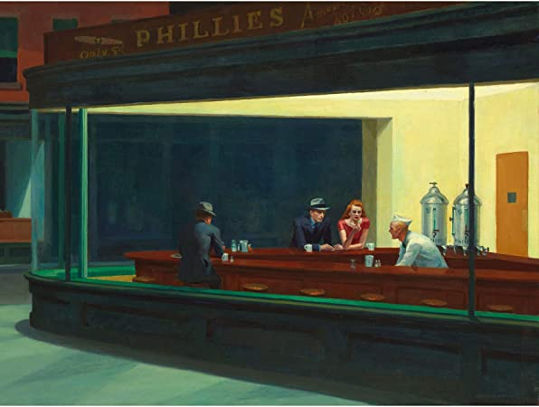
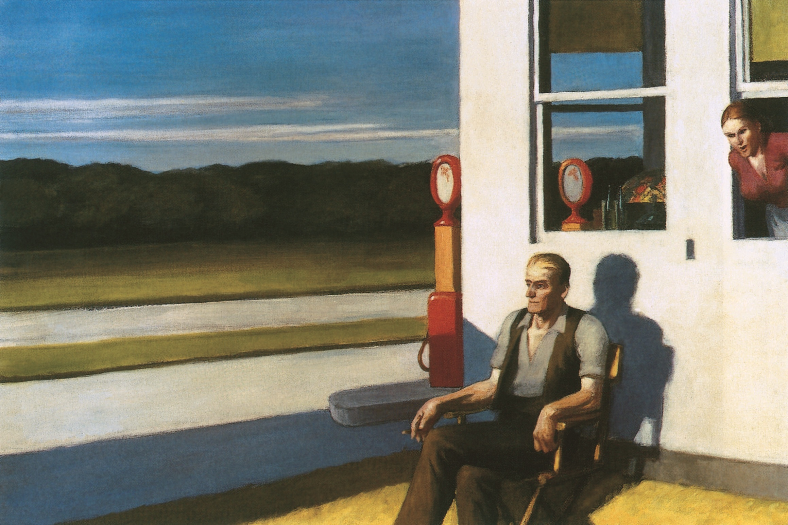
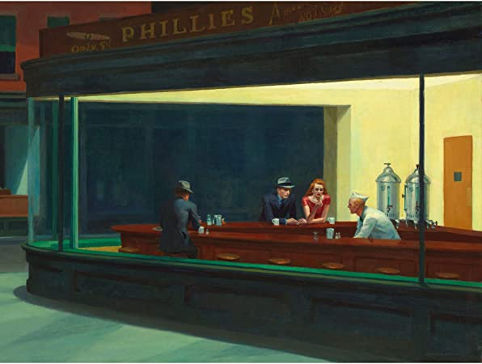
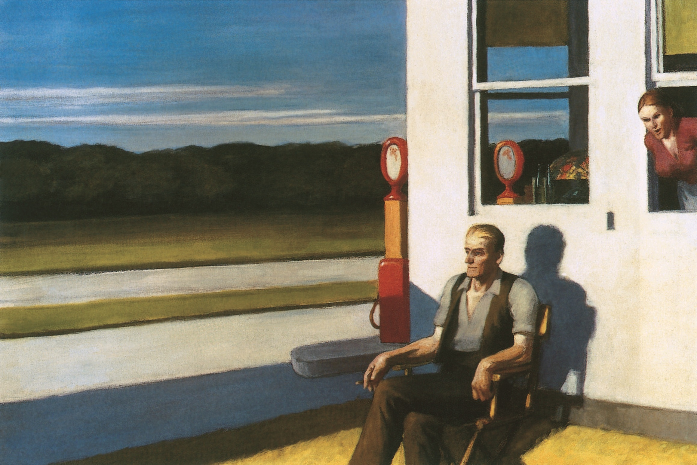

Bio
Edward Hopper (July 22, 1882 – May 15, 1967) was an American realist painter and printmaker. While he is widely known for his oil paintings, he was equally proficient as a watercolorist and printmaker in etching. Both in his urban and rural scenes, his spare and finely calculated renderings reflected his personal vision of modern American life.
Exhibitions
In 1980, the show Edward Hopper: The Art and the Artist opened at the Whitney Museum of American Art and visited London, Düsseldorf, and Amsterdam, as well as San Francisco and Chicago. For the first time ever, this show presented Hopper's oil paintings together with preparatory studies for those works. This was the beginning of Hopper's popularity in Europe and his large worldwide reputation.
In 2004, a large selection of Hopper's paintings toured Europe, visiting Museum Ludwig in Cologne, Germany, and the Tate Modern in London. The Tate exhibition became the second most popular in the gallery's history, with 420,000 visitors in the three months it was open.
In 2007, an exhibition focused on the period of Hopper's greatest achievements—from about 1925 to mid-century—and was presented at the Museum of Fine Arts, Boston . The exhibit comprised fifty oil paintings, thirty watercolors, and twelve prints, including the favorites Nighthawks, Chop Suey, and Lighthouse and Buildings. The exhibition was organized by the Museum of Fine Arts, Boston, the National Gallery of Art, Washington, and Art Institute of Chicago and sponsored by the global management consulting firm Booz Allen Hamilton.
Art Market
Works by Hopper rarely appear on the market. The artist was not prolific, painting just 366 canvases; during the 1950s, when he was in his 70s, he produced approximately five paintings a year. Hopper's longtime dealer, Frank Rehn, who gave the artist his first solo show in 1924, sold Hotel Window (1956) to collector Olga Knoepke for $7,000 (equivalent to $63,722 in 2019) in 1957. In 1999, the Forbes Collection sold it to actor Steve Martin privately for around $10 million.[117] In 2006, Martin sold it for $26.89 million at Sotheby's New York, an auction record for the artist.